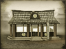
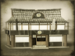

Requires
- Buildings: 
- Religions:
Enables
- Buildings: 
Basic Building Statistics (can be modified by difficulty level, arts, skills, traits and retainers)
- Cost: 6800
- Spreads pro-Shogunate sentiment to neighbouring provinces (+1 influence)
- Improves the spread of pro-Shogunate sentiment (+3 influence)
- Enables recruitment of Rank 1 shinsengumi
- +2 to repression in this province
- +1 to happiness in this province
Description
"Ssshhhh. We ask the questions, not you…"
While the shinsengumi became a police force of sorts, they had many of the habits of the gangs and "secret" societies they purported to oppose. Often drawn from the ranks of ronin, impartial observers would probably have trouble in distinguishing between protection racketeers and the squads of special police. The use by the Shogun of the shinsengumi was probably little more than a recognition that troublemakers were going to cause trouble. It was therefore better to have some control over them than none at all, particularly as these men were largely traditionalists at heart. It was inevitable that Japan modernised in the face of foreign intervention or domination, and reactionary forces had to be kept in check somehow. Better, then, to co-opt the shinsengumi than let them do anything they wanted.